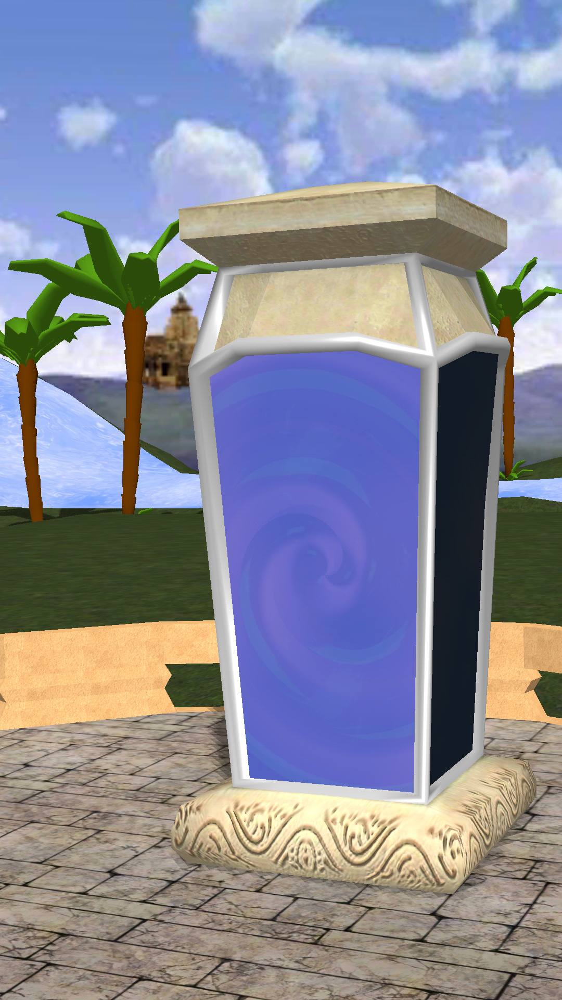
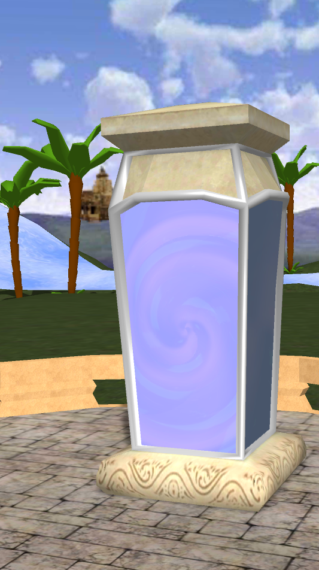
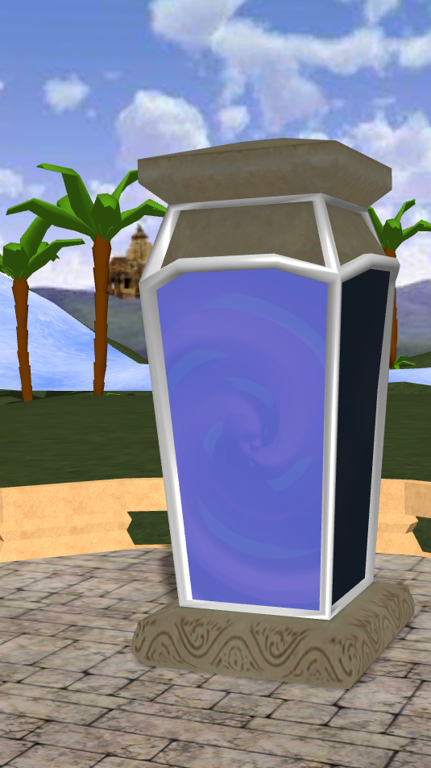
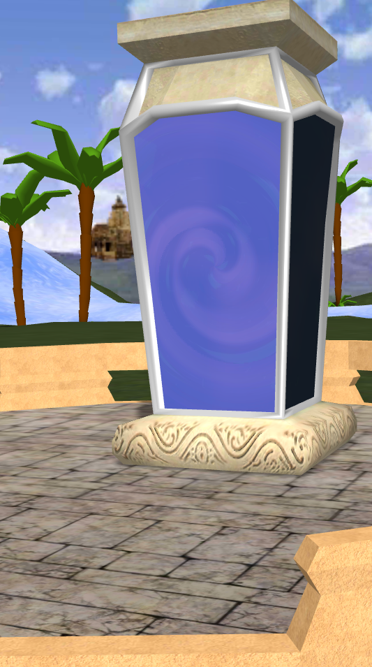
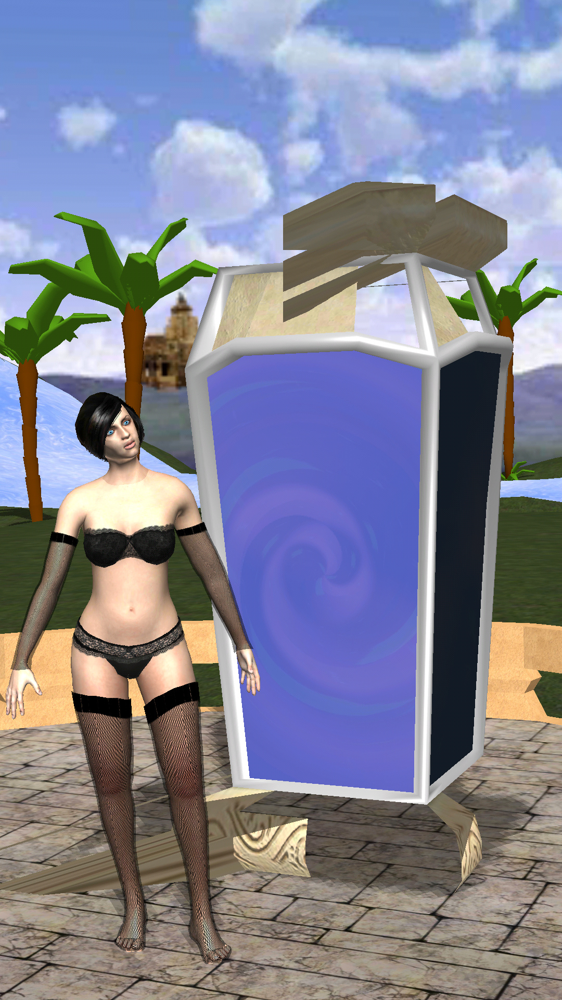

I work on some mobile game (Urho3DPlayer + AngelScript) and test it on device (GLES), and computer DX9 and OGL.
In DX9 version no problem. On GLES and OGL I have glitches. Some screenshots.
This is screen from mobile, in 50% the game start as shown, and that result is good for me. Look at “stone” material on “portal”

But in ~50% runs - game start as
Stone above portal is dark.
On computer in DX9 game always start as shown:

In OGL game always start as

but if I move camera down, at some moment picture changed to

Also on mobile if I add more models, sometimes portal looks like an exploding:

but sometimes all good.
For portal I use DiffNormal technique, other model simple Diff techique.
What could be the problem?